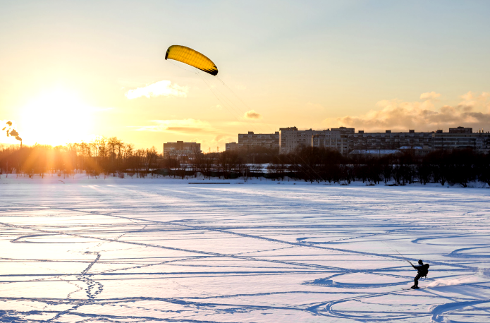

خلفية
في السويد، كان من التقاليد القديمة قضاء الوقت في الطبيعة. كانت رياضة التزلج، سواء التزلج الريفي أو التزلج على المنحدرات، من الأنشطة الشائعة منذ زمن طويل، كما أن مسارات الجري والمشي المضاءة تُعد مشهداً مألوفاً في الغابات السويدية. كذلك فإن جمع التوت والفطر له جذور تقليدية قوية في السويد، وقد جذب أيضاً أشخاصاً من دول أخرى إلى الغابات السويدية. لأكثر من 100 عام، كان الكثيرون يرغبون في الاستفادة من الفرص الفريدة التي يمنحها حق التمتع العام بالطبيعة (Allemansrätten). وتُعد رياضة المشي لمسافات طويلة، والتجديف، وركوب الخيل أمثلة أخرى على أنشطة الهواء الطلق الشائعة في السويد.
قد تختلف أهداف قضاء الوقت في الطبيعة؛ فقد يكون الهدف ممارسة الرياضة، أو الاسترخاء، أو الاستمتاع بجمال الطبيعة، أو قضاء الوقت مع العائلة والأصدقاء. معظم الناس في السويد يمارسون أنشطة الهواء الطلق مرة أو عدة مرات في السنة.
من خلال تقليل الجلوس الطويل والبقاء نشيطاً في الطبيعة، ستحصل على صحة أفضل، جسدياً ونفسياً. وإذا أصبحت نسبة أكبر من سكان السويد نشطة في ممارسة أنشطة الهواء الطلق، فإن ذلك سيساهم في تحسين الصحة العامة وتقليل عدد الإجازات المرضية. وقد أدركت الحكومة السويدية هذا الأمر، وفي عام 2012 وضعت عشرة أهداف لسياسة الترفيه في الهواء الطلق.
الأهداف العشرة لسياسة الحكومة للترفيه في الهواء الطلق باختصار
- الطبيعة متاحة للجميع
- الالتزام القوي والتعاون
- حق الوصول العام كأساس للترفيه في الهواء الطلق
- الوصول إلى الطبيعة للأنشطة الخارجية
- طبيعة حضرية جذابة
- النمو الإقليمي المستدام والتنمية الريفية
- المناطق المحمية كمورد للأنشطة الخارجية
- حياة خارجية غنية في المدرسة
- الأنشطة الخارجية من أجل الصحة العامة الجيدة
- معرفة جيدة بالأنشطة الخارجية
اليوم لا يمكن تحديد عدد أنشطة الهواء الطلق، لأن أي نشاط ترفيهي يُمارس في الطبيعة يمكن اعتباره جزءاً من حياة الهواء الطلق. ومع ذلك، فإن الاهتمام بالأنشطة في الطبيعة لا يتراجع، بل إن عدد الأنشطة في الطبيعة يزداد نتيجة لتغير اهتمامات الناس واستخدامهم للتقنيات الحديثة. من الأمثلة على أنشطة الهواء الطلق التي لم تكن موجودة في الطبيعة قبل 20 إلى 30 عاماً: الطيران الشراعي و"الجيوكاشينغ" (البحث عن الكنوز باستخدام نظام تحديد المواقع GPS).
يمكنك الطيران بالطائرة الورقية، أو كما تُعرف أيضاً بـ "كيت"، في جميع أنحاء السويد.
أمثلة على الأنشطة الخارجية
- المشي والتنزه
- قطف التوت والفطر
- نزهه
- ركوب الدراجات
- التزحلق
- التزلج والتزلج على الجليد
- التزلج والتزلج على الجليد
- توجيه
- التجديف والإبحار والقوارب الآلية
- التسلق
- ركوب الخيل
- حمام
- الصيد والقنص
- الشواء
- خيمة ونوم في ملجأ
- مراقبة الطيور